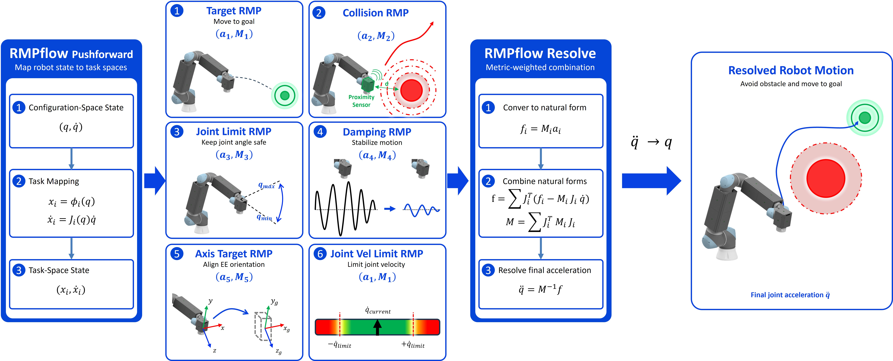
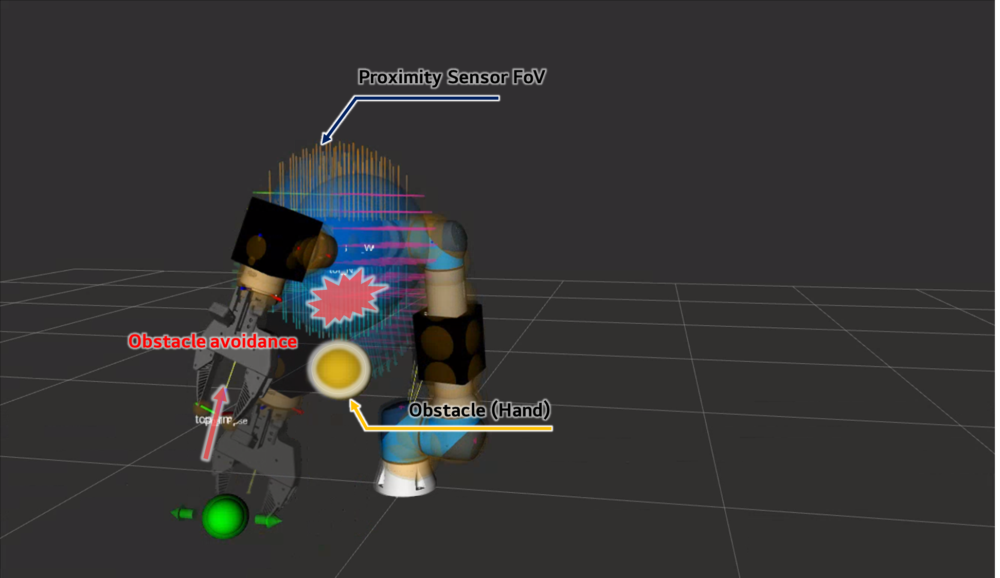
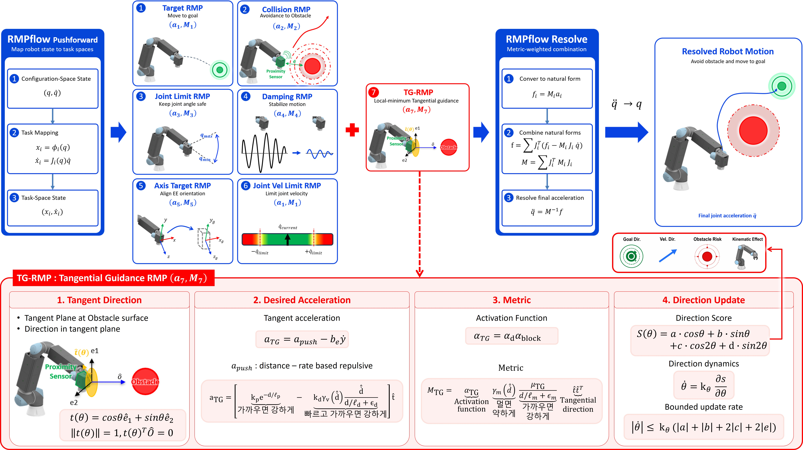

HRI 근접 상황
작업자나 주변 물체의 접근으로 로봇 주변의 환경이 계속 변할 수 있습니다.
인간-로봇 상호작용을 위한 반응형 제어
Proximity Sensing · RMPflow Control · Tangential Guidance
근접센서의 거리값을 기반으로 RB10이 주변 장애물에 연속적으로 반응하도록 RMPflow 제어기를 구성했습니다. 기본 제어기에서 나타난 local minimum을 완화하기 위해 장애물 접선 방향의 우회 동작을 생성하는 TG-RMP를 추가했습니다.
제어 목표
HRI · 근접 장애물 회피 · 목표 진행 유지
HRI 환경에서는 작업자나 주변 물체가 로봇의 동작 범위에 가까워지는 상황이 발생할 수 있습니다. 안전성과 작업 연속성을 함께 확보하려면, 로봇이 이러한 근접 상황을 인지하고 충돌을 피하는 방향으로 움직임을 조정할 필요가 있습니다. 이에 근접 장애물에 반응하면서 목표 진행을 유지하는 제어를 목표로 했습니다.
작업자나 주변 물체의 접근으로 로봇 주변의 환경이 계속 변할 수 있습니다.
근접 거리에 따라 충돌을 피하는 방향으로 움직임을 연속적으로 조정합니다.
회피 과정에서도 목표를 향한 진행이 유지되도록 합니다.
제어기 구성
센서 정보 변환 · 제어 정책 결합 · 동작 명령 생성
근접센서의 거리값을 로봇 기준좌표계의 장애물 위치로 변환하고, 센서가 장착된 각 로봇 링크의 충돌 회피 정책에 연결했습니다. RMPflow를 기반으로 목표 추종, 충돌 회피, 감쇠, 관절 제한 정책을 결합해 로봇의 동작 명령을 생성했습니다.

제어 검증
RViz · 정적 장애물 · 동적 사람 접근
시뮬레이션에서 센서 매핑과 충돌 회피 정책을 먼저 검증한 뒤, 실제 RB10에서 중간 링크 주변의 정적 장애물과 움직이는 손의 접근 상황에 대한 회피 동작을 평가했습니다.
센서 감지 범위 · 로봇 기준 장애물 점 · 링크별 반응

중간 링크 주변에 고정된 장애물의 유무에 따른 실로봇의 회피 동작을 비교했습니다.
움직이는 손의 접근에 대한 실로봇과 RViz의 회피 동작을 비교했습니다.
한계 발견
목표–충돌 정책 대립 · 제어 명령 상쇄
기본 제어기는 근접 장애물과의 충돌을 피했지만, 장애물이 목표 진행 방향을 가로막는 조건에서는 목표 추종과 충돌 회피 정책이 서로 다른 방향의 명령을 생성했습니다. 그 결과 합성된 동작 명령이 작아지면서 로봇이 장애물 앞에 정체되는 local minimum이 나타났습니다.
제어기 확장
접선 방향 선택 · 가속도 생성 · Metric 설정
local minimum을 완화하기 위해 기존 RMPflow 트리에 TG-RMP leaf를 추가했습니다. TG-RMP는 장애물 주변의 접선 방향을 선택하고, 해당 방향으로 움직이기 위한 가속도와 정책의 영향도를 정하는 Metric을 생성해 기존 정책과 함께 결합됩니다.

적용 전후 검증
동일한 장애물 배치에서 TG-RMP 적용 전후를 비교했습니다. TG-RMP 적용 시 장애물의 접선 방향으로 우회 동작이 추가되어, 기본 제어기에서 나타난 정체가 완화되고 목표를 향한 진행이 이어졌습니다.